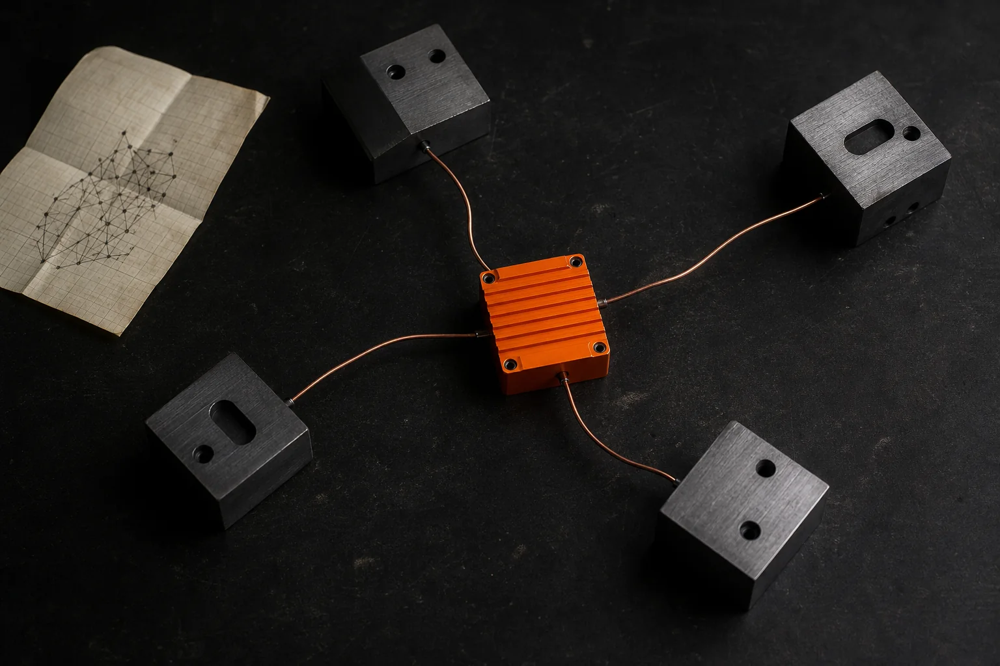

ShortList'd
One resume in, one job description beside it. The app checks ATS signals, compiles LaTeX and drafts a cover letter.
ML & Generative AI engineer turning retrieval systems, forecasting tools and dialogue models into software people can try.
That stretch between a notebook sketch and a working demo: cleaning the data, testing the assumption, wiring the interface and finding the edge cases.
My favorite projects mix research with enough product work to make the idea tangible.
Selected work
Four public repositories that show the way I think, test and ship.
One resume in, one job description beside it. The app checks ATS signals, compiles LaTeX and drafts a cover letter.

A small package for ensemble training, optional Ray workers and quantized model updates.
A multi-task dialogue model that uses speaker and conversation context to predict four Transactional Analysis labels.
Evidence
The projects vary, but the work repeats: define the problem, test the system and make the result usable.
Machine learning, research experiments and full-stack tools in the archive.
Selected for product thinking, technical range and public code.
HQDE is available through PyPI as an installable Python package.
TRACE won at the Data Science Conference Hackathon in 2026.
A model is only one part of a useful system. This is the loop I keep returning to.
Start with what the output should change for the person using it. That keeps the model tied to a real action.
ForecastForge reports planning ranges instead of one confident prediction.Make the smallest honest version work first. A clear baseline exposes whether extra complexity earns its place.
FH-RAG compares structured retrieval against a flat chunking approach.Look for weak evidence, edge cases and misleading success metrics before polishing the happy path.
PsychoTA treats speaker and conversation context as part of the prediction.Wrap the work in an interface, API or package so another person can test the idea without opening the notebook.
ShortList'd, HQDE and CanIPlay each expose the system in a different form.I work across machine learning, Generative AI and the web layer around them. I care about evidence, readable code and being honest about what is still a prototype.
Full resumePyTorch, XGBoost, scikit-learn, Ray, SHAP
RAG, Transformers, FAISS, ChromaDB, Whisper
Python, TypeScript, React, Next.js, FastAPI
AWS, GCP, Firebase, PostgreSQL, Cloudflare
University of Hyderabad
University of Hyderabad
IT Lab and Object-Oriented Programming Lab.
Data Science Conference Hackathon
MES College of Engineering
Honors in AI/ML, CGPA 8.85.
Three ideas that now shape how I build.
ForecastForge uses P10, P50 and P90 outcomes because a planning tool should show risk, not hide it inside one point estimate.
See ForecastForgeFH-RAG explores tree chunking and beam search because long documents lose meaning when every chunk is treated as an isolated fragment.
PsychoTA combines speaker-aware and causal turn context because the same sentence can play a different role inside a conversation.
See PsychoTA15 projects
I am looking for ML engineering and applied AI roles. If my work fits something you are building, send me a note.